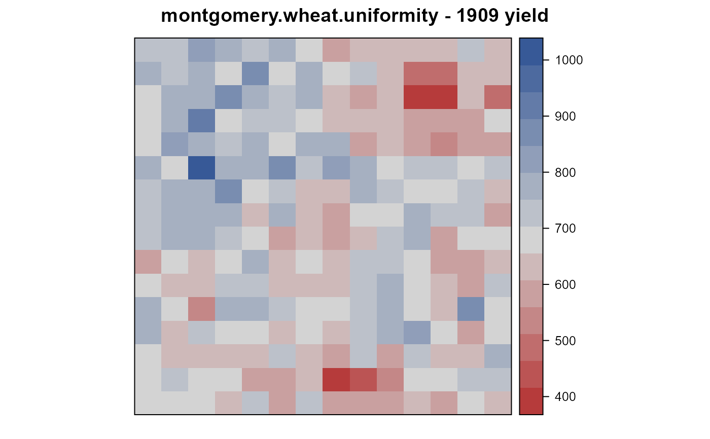
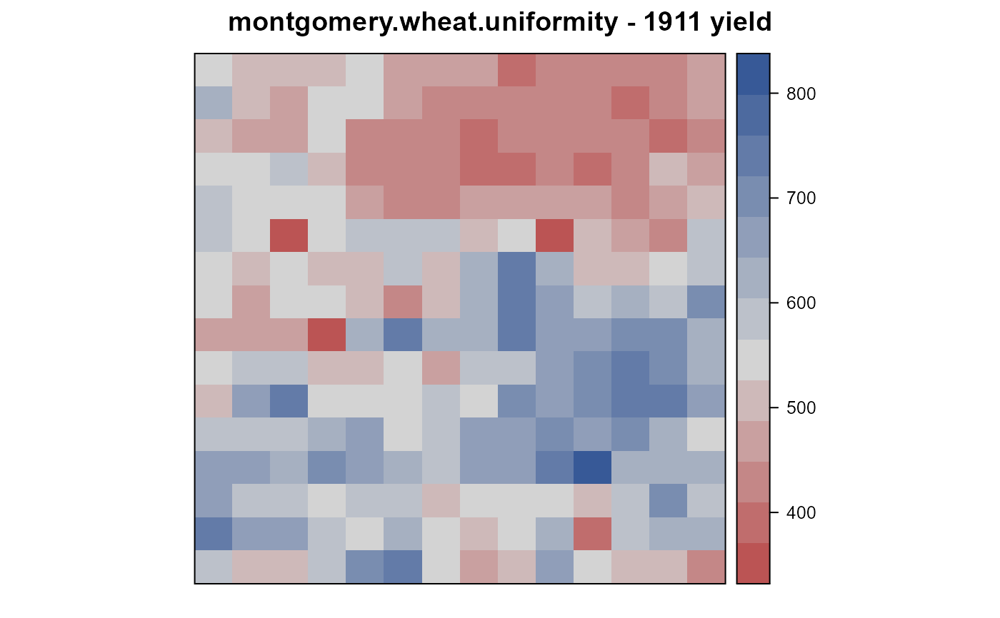
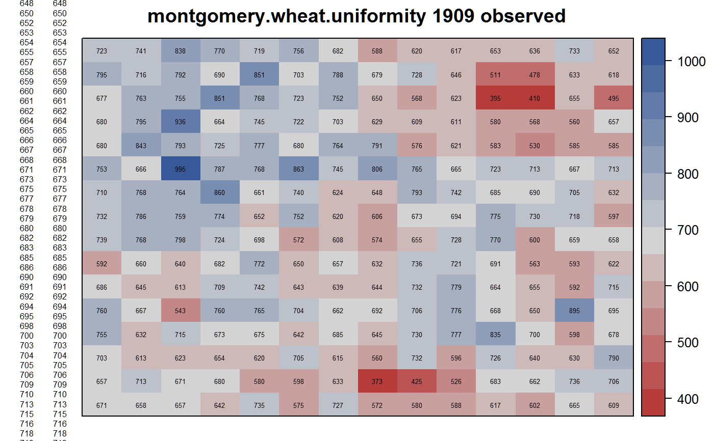
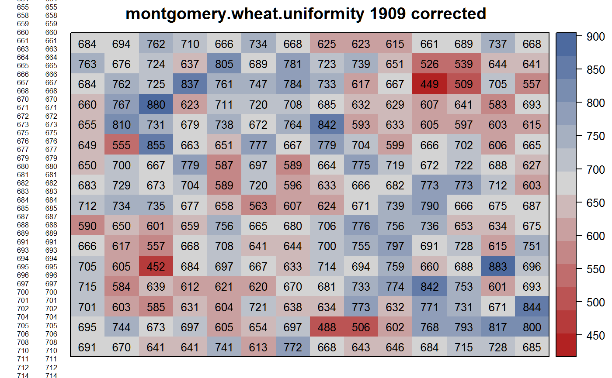
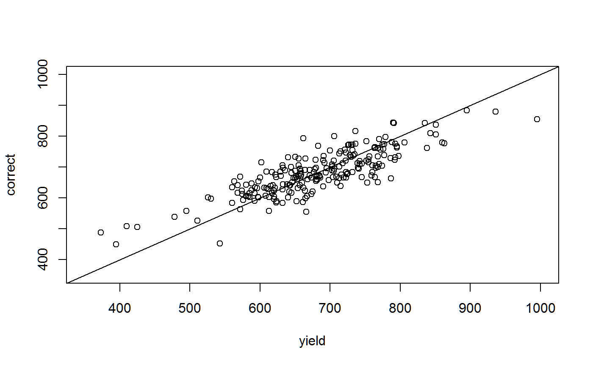

montgomery.wheat.uniformity.RdUniformity trial of wheat at Nebraska Experiment Station, 1909 & 1911.
data("montgomery.wheat.uniformity")
A data frame with 448 observations on the following 3 variables.
yearyear
colcolumn
rowrow
yieldyield, grams
Experiments were conducted by the Nebraska Experiment Station.
A field was sown to Turkey winter wheat in the fall of 1908 and harvested in 1909. The drill, 5.5 feet wide, was driven across the first series of 14 blocks, the boundaries of the blocks being later established. Each series was sown the same way, no space was allowed between the blocks. Each block was 5.5 ft square.
The experiment was done 3 times with harvests in 1909, 1910, 1911. A simple heatmap of the 3 years' yields are shown in Montgomery (1912), figure 3, p. 178.
The 1909 data are given by Montgomery (1913), figure 10, page 37. NOTE: North is at the right side of this diagram (as determined by comparing yield values with the fertility map in Montgomery 1912, p. 178).
The 1910 data are not available.
The 1911 data are given by Montgomery (1912), figure 1, page 165. NOTE: North is at the top of this diagram.
Surface & Pearl (1916) give a simple method for adjusting yield due to fertility effects using the 1909 data.
Field width: 14 plots * 5.5 feet
Field length: 16 blocks * 5.5 feet
E. G. Montgomery (1912). Variation in Yield and Methods of Arranging Plats To Secure Comparative Results. Twenty-Fifth Annual Report of the Agricultural Experiment Station of Nebraska, 164-180. https://books.google.com/books?id=M-5BAQAAMAAJ&pg=RA4-PA164
E. G. Montgomery (1913). Experiments in Wheat Breeding: Experimental Error In The Nursery and Variation in Nitrogen and Yield. U.S. Dept of Agriculture, Bureau of Plant Industry, Bulletin 269. Figure 10, page 37. https://doi.org/10.5962/bhl.title.43602
Surface & Pearl, (1916). A method of correcting for soil heterogeneity in variety tests. Journal of Agricultural Research, 5, 22, 1039-1050. Figure 2. https://books.google.com/books?id=BVNyoZXFVSkC&pg=PA1039
# \dontrun{ library(agridat) data(montgomery.wheat.uniformity) dat <- montgomery.wheat.uniformity dat09 <- subset(dat, year==1909) dat11 <- subset(dat, year==1911) # Match the figures of Montgomery 1912 Fig 3, p. 178 libs(desplot) desplot(dat09, yield ~ col*row, aspect=1, # true aspect main="montgomery.wheat.uniformity - 1909 yield")desplot(dat, yield ~ col*row, subset= year==1911, aspect=1, # true aspect main="montgomery.wheat.uniformity - 1911 yield")# Surface & Pearl adjust 1909 yield for fertility effects. # They calculate smoothed yield as (row sum)*(column sum)/(total) # and subtract this from the overall mean to get 'deviation'. # We can do something similar with a linear model with rows and columns # as factors, then predict yield to get the smooth trend. # Corrected yield = observed - deviation = observed - (smooth-mean) m1 <- lm(yield ~ factor(col) + factor(row), data=dat09) dev1 <- predict(m1) - mean(dat09$yield) # Corrected. Similar (but not exact) to Surface, fig 2. dat09$correct <- round(dat09$yield - dev1,0) libs(desplot) desplot(dat09, yield ~ col*row, shorten="none", text=yield, main="montgomery.wheat.uniformity 1909 observed")desplot(dat09, correct ~ col*row, text=correct, cex=0.8, shorten="none", main="montgomery.wheat.uniformity 1909 corrected")# Corrected yields are slightly shrunk toward overall mean plot(correct~yield,dat09, xlim=c(350,1000), ylim=c(350,1000))# }